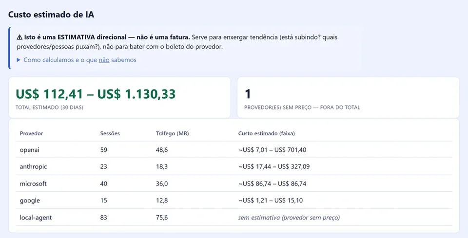
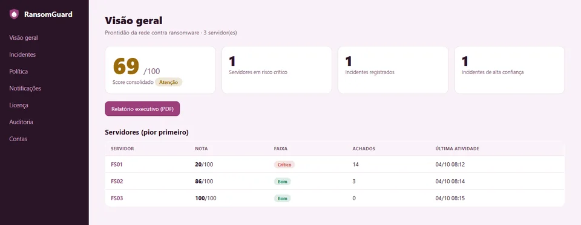
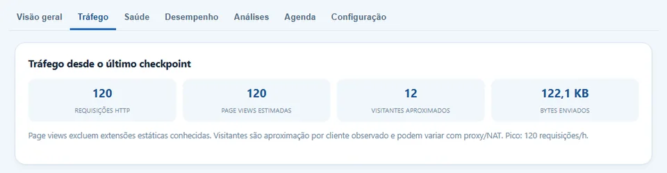

Um diagnóstico de escopo fechado que avalia riscos, a melhor arquitetura — on-premises, nuvem ou híbrida —, capacidade, custos e maturidade para IA. Você recebe um plano executivo para seguir com ou sem a gente.
30 anos de mercado · duas décadas de reconhecimentos Microsoft
Segurança, nuvem, licenciamento e IA
Exemplo ilustrativo — não representa um cliente real.
One of the best security professionals in Brazil and Latin America… a recognized authority in Security.
Antes de qualquer projeto, clareza. Analisamos o ambiente atual, recomendamos a arquitetura certa para cada carga de trabalho, organizamos capacidade e custos e preparamos a empresa para IA — com escopo e prazo fechados e linguagem para a diretoria.
Controle e custo previsível para cargas estáveis, sensíveis ou com requisitos locais.
O melhor dos dois mundos: cada carga onde rende mais, com transição gradual e segura.
Elasticidade, resiliência e velocidade — com governança para o custo não fugir do controle.
Não vendemos uma arquitetura: recomendamos a que faz sentido para o seu negócio, com base em risco, desempenho e custo total.
Entendemos negócio, prioridades e preocupações da diretoria e da TI.
Arquitetura atual, capacidade, identidade, segurança, Azure, Microsoft 365, licenças e uso de IA.
Riscos ordenados por impacto no negócio, não por jargão técnico.
Reunião com diretoria e TI: o que fazer, em que ordem e quanto custa não fazer.
Um material objetivo, para decisão — não um PDF de prateleira.
Conduzimos os projetos que o diagnóstico revela — com a mesma equipe, sem terceirizar o que importa.
Reduzir a superfície de ataque e a chance de parar a operação.
Infraestrutura moderna, pagando apenas pelo que gera valor.
Adotar IA com resultado, sem risco jurídico nem surpresa na fatura.
Colaboradores usam ferramentas de IA não aprovadas, com dados da empresa e custos que ninguém acompanha. Transformamos esse risco em vantagem: adoção estruturada, com segurança, governança e orçamento previsível.

Tela real do ShadowAIGuard, produto nosso: custo estimado de IA por provedor.
Além da consultoria, desenvolvemos produtos para ambientes Windows — prova, em código, da profundidade do que fazemos.

Detecta e contém ransomware em servidores Windows antes que o estrago se espalhe.
Conhecer o RansomGuard ↗Visibilidade e controle de todo uso de IA no endpoint, sem inspecionar conteúdo. Do shadow AI ao uso homologado.
Conhecer o ShadowAIGuard ↗
Saúde, desempenho e tráfego de sites IIS com diagnósticos acionáveis — dados ficam no seu ambiente.
Conhecer o Pulso ↗Três sócios, três competências complementares — e uma premissa: autoridade não se declara, se demonstra.
Três décadas em infraestrutura, nuvem e segurança. Fundador de empresa de tecnologia adquirida por um dos maiores grupos educacionais do país e ex-CTO universitário por 17 anos.
Condução de projetos corporativos com método, prazo e comunicação clara com a diretoria.
Rede consolidada com empresas do Espírito Santo e entendimento real do mercado local.
Uma seleção de artigos publicados no LinkedIn sobre IA corporativa, segurança e o futuro da engenharia de software.
Por que softwares que "acertam quase sempre" exigem um jeito novo de pensar risco, controle e arquitetura.
Ler no LinkedIn ↗ Inteligência ArtificialO que muda quando agentes entram no ciclo de construção de software — e o que isso significa para quem contrata tecnologia.
Ler no LinkedIn ↗ Inteligência ArtificialUma leitura histórica das ondas de automação — e por que a resposta certa é adoção estruturada.
Ler no LinkedIn ↗ SegurançaProteção contra ransomware com o que você já tem — a pergunta que deu origem ao RansomGuard.
Ler no LinkedIn ↗Uma primeira conversa sem compromisso: entendemos seu cenário e dizemos, com franqueza, se e como podemos ajudar.
Solicitar diagnóstico